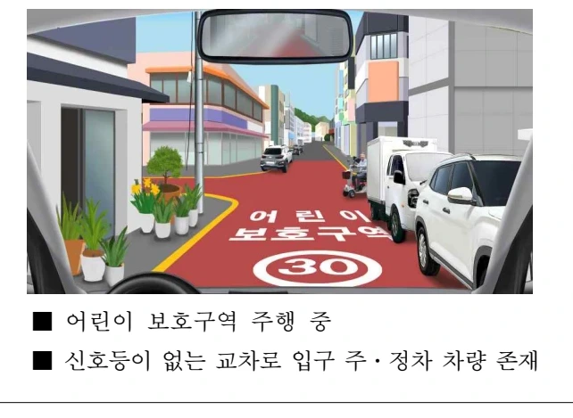

844. Which of the following are the TWO safest ways to proceed in the given situation?

- ①Come to a complete stop before entering the intersection and then proceed.
- ②Honk and speed up to pass through it quickly.
- ③Since an elderly pedestrian in a mobility scooter is waiting, pass through the intersection quickly.
- ④Exercise caution as there may be children walking between the parked or stopped vehicles.
- ⑤Since the vehicle going straight ahead has the right of way, keep to the left and proceed as is.
Show answer
Answer
① Come to a complete stop before entering the intersection and then proceed.
④ Exercise caution as there may be children walking between the parked or stopped vehicles.
Reference
The road can be used not only by cars but also by children, the elderly, and the disabled. In order for the transportation vulnerable to use the road safely, all drivers need to take a proactive stance to protect the transportation vulnerable. Therefore, when passing by a pedestrian in any of the following places, the driver of any vehicle must drive slowly at a safe distance, and when he or she obstructs the passage of pedestrians, he or she must slow down or stop temporarily to allow pedestrians to pass safely. 1. A road without a center line, with no separation between sidewalks and roadways. 2. Pedestrian priority road. 3. Places other than roads (Road Traffic Act, Article 27, Paragraph 6)
Reference text is a machine translation for study.